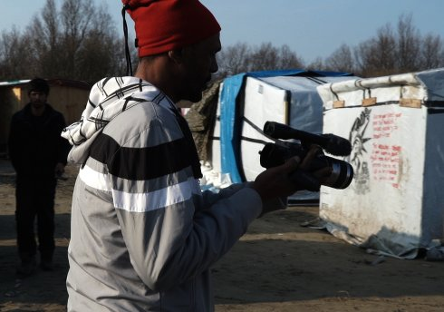

Kalès

Laurent Van Lancker
|
BE
2017 K: Laurent Van Lancker, Khalid Mansour, Anna Savchenko, Guillaume Vandenberghe – S: Rudi Maerten, Laurent Van Lancker – T: Anna Savchenko, Aurélien Lebourg, Laszlo Umbreit – P: Ellen Meiresonne – V: Polymorfilms – Mit Khalid Mansour, Abdel Raouf, Babak Inanloo, Khalid Pacha www.laurentvanlancker.art
|
sunday 14 oct 6.30 pm werkstattkino
The only direct commentary by filmmaker Laurent Van Lancker on what he spent a year documenting is the opening quote, from Dante´s Inferno: ”So bitter it is, that death is little worse.” From then on, the camera speaks in dark shots filmed in the refugee camp close to Calais, which people now refer to as ”The Jungle.” As the wind from the sea repeatedly rips the flimsy tents made of garbage bags to shreds, the camp’s inhabitants attempt to justify their existence. Using the very few resources available, they organize themselves as best they can into a basic society: cooking, trading, making music, celebrating birthdays and just getting through the day until the long night falls. The absence of commentary is a blessing—the images alone say so much. The poetry comes from the refugees themselves: ”I dreamed that I could cross over to England in a hot-air balloon, everything was ready. But then I woke up in the Calais jungle.” (IDFA 2017)
Laurent Van Lancker Lives and works in Brussels. This multilingual Audio-Visual artist both studied Film and Anthropology, and holds a PhD in Audiovisual Art. He lectures at filmschools (INSAS) and universities (FU BERLIN, WWU Münster) and SoundImageCulture workspace. His films explore inter-cultural dialogue, and draw on various modes: Self-Reflexive, Performative and Sensorial cinema. They propose a dialogue between ethics and aesthetics, poetics and politics.
|
| Films Ymako 1998 – Surya 2006 – Brak 2015 – Kalès 2017
|